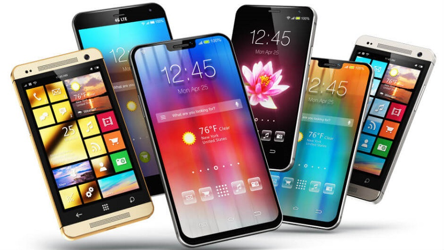
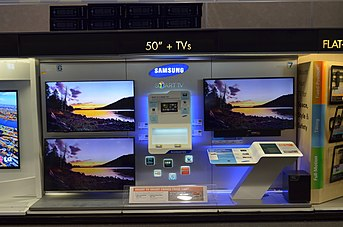
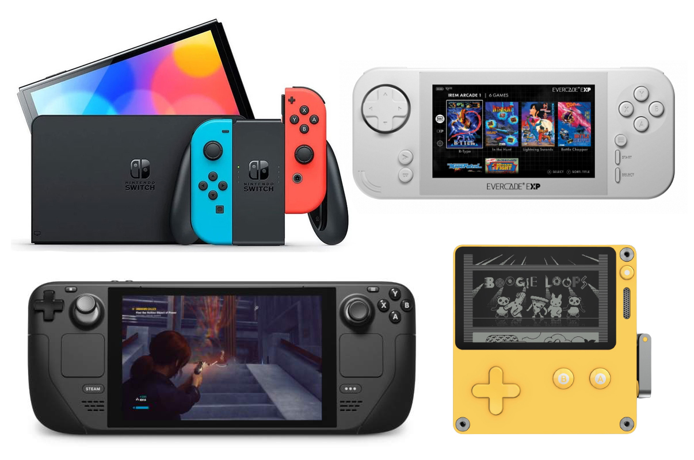

Ordenador personal
Esta sección es un extracto de Computadora personal
Una computadora portátil.
Una computadora personal, computador personal u ordenador, conocida como PC (siglas en inglés de Personal Computer), es un tipo de microcomputadora diseñada en principio para ser utilizada por una sola persona. Habitualmente, la sigla PC se refiere a las computadoras IBM PC compatibles. Una computadora personal es generalmente de tamaño medio y es usada por un solo usuario (aunque hay sistemas operativos que permiten varios usuarios simultáneamente, lo que es conocido como multiusuario). Suele denominarse ordenador de sobremesa, debido a su posición estática e imposibilidad de transporte a diferencia de un ordenador portátil.Teléfono inteligente
Esta sección es un extracto de Teléfono inteligente.[editar]Dos teléfonos inteligentes: un Samsung Galaxy J5 (izquierda) y un iPhone 5s (derecha)
El teléfono inteligente(del inglés smartphone) es un dispositivo móvil que combina las funciones de un teléfono móvil y de un PDA. Estos dispositivos funcionan sobre una plataforma informática móvil, con mayor capacidad de almacenar y capaz de realizar tareas simultáneamente, tareas que realiza un ordenador o una computadora, y con una mayor conectividad que un teléfono convencional. Debido a ello, estos teléfonos reciben el nombre de inteligente, que se utiliza más bien con fines comerciales para distinguir de los teléfonos móviles o celulares básicos. El antecedente más cercano de estos dispositivos son los PDA.

Televisión inteligente
Esta sección es un extracto de Televisión inteligente.
Televisor inteligente de Samsung
La televisión inteligente19 (en inglés: Smart TV) es la integración de internet y de las características web 2.0 a la televisión digital y al decodificador de televisión (STB), así como la convergencia tecnológica entre los ordenadores y estos televisores y el STB. Estos dispositivos se centran en los medios interactivos en línea, en la televisión por Internet y en otros servicios como el video bajo demanda.
Consolas de juegos
Esta sección es un extracto de Videoconsola
Una colección de varias consolas de videojuegos en un programa de juegos
Una videoconsola, o simplemente una consola, es un sistema electrónico de entretenimiento que ejecuta videojuegos contenidos en cartuchos, discos ópticos, discos magnéticos, tarjetas de memoria o en cualquier dispositivo de almacenamiento.Los primeros sistemas de videoconsolas fueron diseñados únicamente para jugar videojuegos pero a partir de la quinta generación de videoconsolas han sido incorporadas características importantes de multimedia, internet, tiendas virtuales y servicio en línea como: Nintendo Switch Online, PlayStation Network, y Xbox Network.
Internet de las cosas
Esta sección es un extracto de Internet de las cosas.
Descripción gráfica del mundo interconectado
El Internet de las cosas (IdC) describe objetos físicos (o grupos de estos) con sensores, capacidad de procesamiento, software y otras que se conectan e intercambian datos con otros dispositivos y sistemas a través de internet u otras redes de comunicación.29303132 El Internet de las cosas se ha considerado un término erróneo porque los dispositivos no necesitan estar conectados a la Internet pública. Sólo necesitan estar conectadas a una red y ser direccionables individualmente.